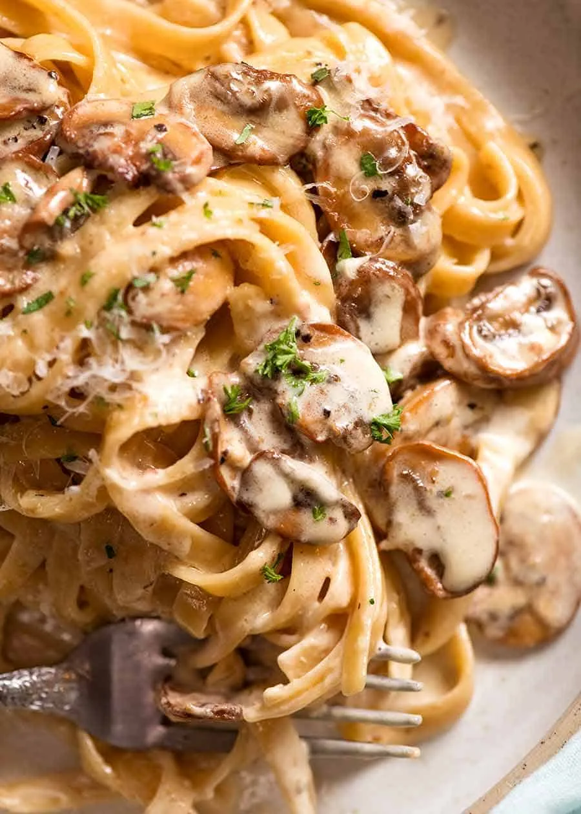

main meal
Pasta
Creamy Mushroom Pasta
A creamy mushroom pasta with golden buttery mushrooms, garlic, parmesan, and a rich creamy sauce tossed with pasta.
What You'll Need
Ingredients
Pasta
- 160g fettuccine or linguine
- Salt, for pasta water
Mushroom Sauce
- 30g (2 Tbsp) unsalted butter
- ½ Tbsp olive oil
- 300g mushrooms, sliced
- 2 garlic cloves, finaly chopped
- ½ cup chicken or vegetable stock
- ¾ cup heavy cream
- ⅓ cup finely grated parmesan
- ½ tsp salt
- ½ tsp black pepper
Serving
- Extra parmesan
- Parsley, roughly chopped (optional)
Time To Cook
Method
Cook the Pasta
Bring a large pot of salted water to the boil and cook the pasta for 1 minute less than the time recommened on the packet.
Just before draining, scoop out 1 cup of the pasta cooking water. Drain the pasta and set aside.
Cooking the Mushrooms
Heat a large pan over high heat. Add the butter and olive oil.
Add the sliced mushrooms and cook, stirring regularly, until they begin to soften.
Add a pinch of salt and pepper. Continue cooking for about 4 to 5 minutes, until the mushrooms become golden brown.
Add the chopped garlic and cook until the garlic is golden and the mushrooms are well browned.
Make the Sauce
Add the chicken or vegetable stock to the pan and stir, scraping the bottom of the pan to loosen any browned pieces.
Add the cream, parmesan, salt, and pepper. Stir until the parmesan has melted into the sauce.
Simmer the sauce for about 2 minutes, stirring regularly.
Combine and Serve
Add the cooked pasta to the sauce and toss for 1 to 2 minutes, until the sauce thickens and coats the pasta.
If the sauce becomes too thick, add a small splash of the reserved pasta cooking water until it reaches the desired consistency.
Garnish with chopped parsley and serve immediately with extra parmesan.
Recipe & Image Source
Credits
This Pasta recipe was originally published by RecipeTin Eats.
Recipe by Nagi Maehashi.
The image used on this page is sourced from RecipeTin Eats as well.